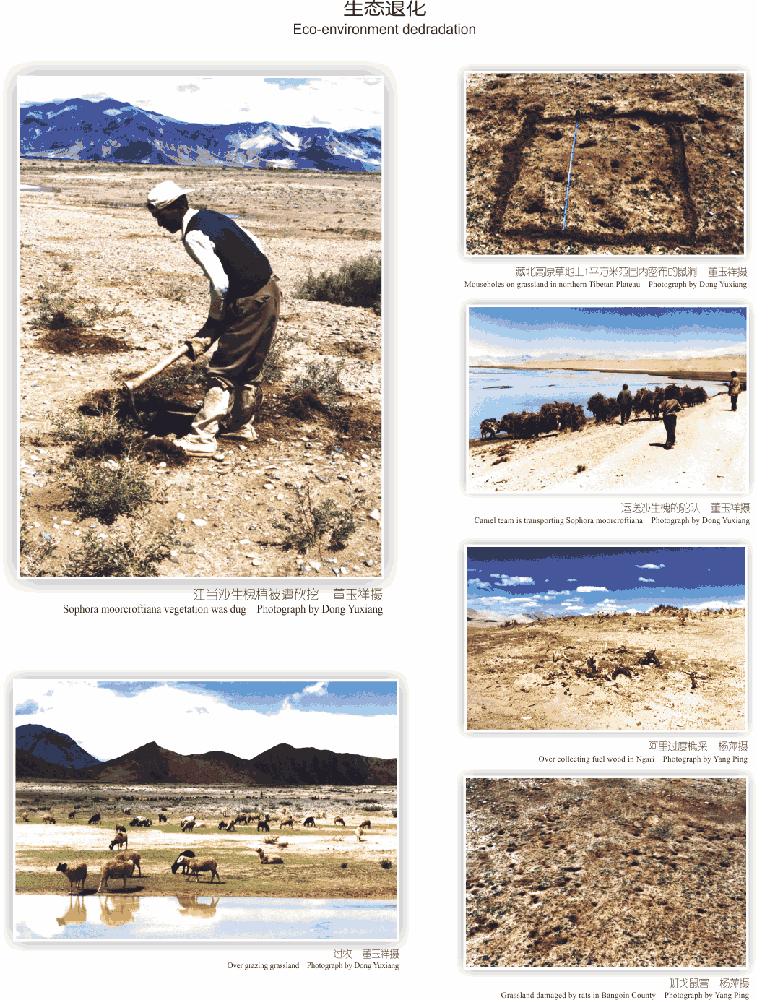
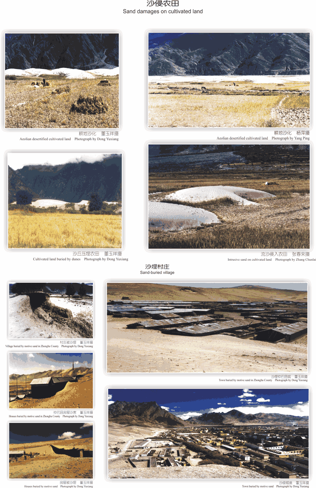

西藏高原土地沙漠化防治区域可划分为藏南河谷湖盆区、藏北高原区、阿里高原区、藏东南三江河谷区等4区11亚区。土地沙漠化防治一是要对具有潜在退化危险的土地预防沙漠化；二是对已经沙漠化的土地要恢复其土地生产力并进行开发利用。因此，西藏土地沙漠化防治的基本思路是：全面保护，综合治理，适度开发，协调发展。
土地沙漠化使西藏高原可利用的农田、草场面积不断缩小，林木覆盖率急剧减少，地表植被破坏，侵蚀加剧，表土流失，生物赖以生存的生态环境和生物群落发生变化，加剧了“源区”生态环境的恶化，影响水源涵养区和集流区地表、地下水的补给、循环和再分配，最终使“江河源”和“生态源”作用遭受损伤和破坏。同时，许多高原上的物种在沙漠化过程中，由于生态环境变劣而逐渐减少，甚至灭绝，造成了生物多样性的丧失。
流沙堆积、沙丘前移埋压建筑物、村庄、城镇，使许多村镇因风沙危害不宜再继续生活居住，不得不搬迁、废弃。西藏约有748个村受到风沙危害，每年因清理积沙、搬迁和新建房屋而造成的经济损失都在数千万元。流沙也损害通信输电线路，掩埋渠道和水利设施，埋压道路。

土地沙漠化的发生发展使西藏高原可利用土地面积不断减少，土地质量日趋下降，西藏高原受风沙危害的农田总面积有3.09万平方千米，占西藏耕地总面积的13.8%，估计由此所造成的粮食减产每年高达3.08万吨，相当于6万多人一年的口粮。
